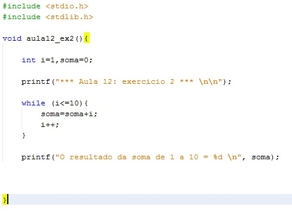
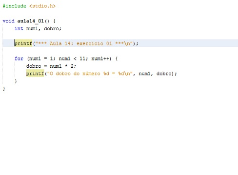

Lígia Rodrigues Prete - Professora
Possui Graduação em Processamento de Dados pela Universidade Paulista (1999). Pós-Graduação Lato Sensu em Informática na área de concentração em Desenvolvimento de Sistemas sob a Tecnologia Cliente/Servidor e Internet pelo Centro Universitário de Rio Preto (2001).
Licenciatura Plena em Informática pelo Programa Especial de Formação Pedagógica de Docentes para as Disciplinas do Currículo da Educação Profissional de Nível Médio do Centro Estadual de Educação Tecnológica Paula Souza (2008). Pós-Graduação Stricto Sensu (Mestrado) em Engenharia Elétrica na área de concentração em Automação pela Universidade Estadual Paulista Júlio de Mesquita Filho (2011).
Pós-Graduação Stricto Sensu (Doutorado) em Engenharia Elétrica na área de concentração em Automação pela Universidade Estadual Paulista Júlio de Mesquita Filho (2016). Atualmente é docente do Centro Estadual de Educação Tecnológica Paula Souza (CEETEPS) na Faculdade de Tecnologia Professor José Camargo - Fatec Jales. Tem experiência na área de Ciência da Computação, com ênfase em desenvolvimento de sistemas, atuando principalmente nos seguintes temas: programação, banco de dados, redes e automação.
While
O "while" serve para que não precise executar manualmente algumas operações, sendo assim criamos um loop através dele.
For
O "for" é uma extrutura de repetição de um conjuto de instruções que são contaveis enquanto a condição for verdadeira.
Do While
O "do while" tem a mesma função que o while com apenas um diferencial, mesmo que a condição não for verdadeira, o código dentro do do while vai funcionar ao menos uma vez.
 